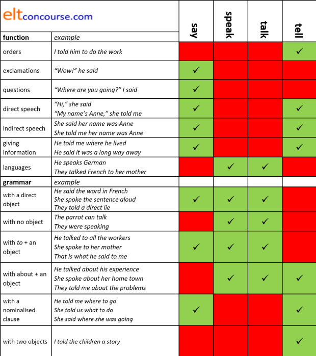

Colligation: classification by syntactic properties

A definition
This is a term often contrasted with collocation
(to which there is a
separate guide on this site).
The clue is in the name:
- collocation derives from the Latin collocare meaning place together. It refers to items in the language which are conventionally found together, placed that way, in other words.
- colligation derives from the Latin colligare meaning tie together. It refers to items which form a set with syntactically identical properties. Such items are said to colligate. A careful definition is:
A term ... for the process or result of
grouping a set of words on the basis of their similarity in entering
into syntagmatic grammatical relations.
(Crystal, 2008:86)
Because the term refers both to the
process or result of grouping a set of words
we can refer to items colligating and to the resulting group
sharing the same colligation. A colligation, therefore, refers to sets of
items which are primed to co-occur with certain grammatical
structures. We can say that, for example:
The verbs speak and tell
colligate differently
or we can prefer:
The verbs speak and tell
belong to different colligations.
An explanation of syntagmatic |
Syntagmatic and paradigmatic relations
Take the sentence:
- He bought a hat.
In this sentence, hat can be replaced by almost any noun but it must be a noun or a noun phrase. Likewise, bought can be replaced by many verbs but they must be verbs or a verb phrase. So we can get, e.g.:
- He sold a hat.
- He bought a car.
- He stole a gadget.
- Syntagmatic relationship
- This describes the relationship between, e.g., He, bought
and a hat in Sentence 1, He, sold and
a hat in Sentence 2, He, bought
and a car in sentence3 and He and stole
and a gadget in Sentence 4.
These relationships work horizontally between words. Subjects use Verbs, Verbs sometimes take Objects, Adjectives modify Nouns, Adverbs modify Verbs and so on. The relationship is to do with syntax (hence the name). - Paradigmatic relationships
- These are exemplified by the changes we have made between the
sentences and describe the relationships between:
bought, sold and stole
car, gadget and hat
These relationships work vertically in the sense that Noun phrases can be replaced by other Noun phrases, Verb phrases by other Verb phrases, Adjectives by other Adjectives, Adverbs by other Adverbs and so on. The relationship is to do with word and phrase class.
It all works like this:

The words in each box have paradigmatic relationships to each other. The red arrows show the syntagmatic relationships.
 |
Collocation vs. colligation |
- Collocation
- is one type of syntagmatic relationship describing the
phenomenon we observe of, e.g., the adjective genuine
often being seen in conjunction with a noun like
article, painting, excuse, antique etc. but not with
money, pen, computer, glass etc. In the same vein, we
close the door but switch
off a light. Some languages will use the
same verb for both.
Collocation is also a paradigmatic relationship insofar as it is possible to have, e.g.:
a heavy cold
and we can replace heavy with a range of other adjectives which collocate with a cold to get, e.g.:
a terrible cold
a bad cold
a nasty cold
and so on but not:
*a large cold
*a weighty cold
*an evil cold
Paradigmatically, then, we can replace the adjective with a range of others with similar collocational characteristics.
What we are referring to here is lexical collocation because we are focused on the content words (adjectives and nouns in this case but the focus could be on verb + noun and so on).
There is a form of collocation which is often referred to as grammatical collocation because it concerns function words rather than content words. For example:
admit to a mistake
abstain from voting
care for the children
are all collocations of verb + preposition (and are analysed in more depth in the guide to multi-word verbs of which they form a subset).
Mistakenly, this sort of relationship is sometimes referred to as colligation because it is grammatical rather than lexical but, as can be seen from the examples, is probably better considered just a simple form of grammatical collocation. Colligation proper, as we shall see, is more complicated.
There is a guide to collocation linked in the list of related guides at the end. - Colligation
- describes a different but allied relationship. Just as
an adjective can be, as it were, primed to appear before a
particular set of nouns so can a word be primed to enter into
certain grammatical relationships. For example, the verbs
allow, permit, forbid, force, enable are often seen in
constructions like:
I allowed him to go
Mary permitted him to come
I forbade him to speak
I forced him to go
The operation enabled him to walk
Where the form is: Subject (often but not always human) + object (often human) + to + infinitive.
Moreover, the second verb in such structures is usually dynamic rather than stative in use. Things like:
I allowed him to understand
They permitted him to be
are vanishingly rare because understand and be are not being used dynamically in this meaning.
Other verbs which may mean very similar things such as authorise, let, approve, make, coerce, necessitate, tolerate, consent will not enter the same sorts of syntactical relationships so are not colligates of allow, permit, forbid etc. We cannot, therefore, say:
*I let him to come
*I consented him to come
*I made him to come
and so on.
Both colligation and collocation are language-specific phenomena. What collocates in one language may not in another and the same applies to colligation.
Collocational phenomena are sometimes described in terms of what
is 'done' and 'not done' in the language so we prefer, for example:
a wide street
to
a broad street
and
a narrow street
to
a thin street
although we are quite happy with both
a narrow line
and
a thin line.
By the same token, colligation can be described in terms of what is done and not done in the language but the advantage of looking at colligation over collocation is that colligation can be explained and taught on the basis of patterning in the language which follows rules. That's much harder to do with collocation because that phenomenon seems, superficially at least, random.
Unlike collocation, in which it is possible to identify a range of simple types, adjective + noun, verb + noun, adverb + adjective etc., colligation is a somewhat more slippery concept pedagogically. Nevertheless, Hoey suggests:
Colligations are particularly important
to learners of the language because they explain why it is that a
learner may feel he or she knows a word and yet produce a sentence
that is grammatical but ‘not English’.
(Hoey 2003)
 |
Examples of colligational issues |
First, a simple test of your colligational competence
  |
Mini-task How do the verbs authorise, approve and tolerate form colligates? What kinds of subjects do they allow? Are they transitive? What kinds (if any) of objects do they allow? Click here when you have an answer. |
The usual way is in sentences such as:
They authorised his
visit.
They authorised the money.
The boss approved my expenses claim.
The boss approved the expenditure.
I tolerated his rudeness.
I tolerated the interruption.
In other words:
The description of the type of subject or object (human vs.
inanimate) above is strictly speaking an aspect of collocation, not
colligation. The concepts overlap to some extent but the
nature of the subject or object of the verb is rarely mentioned in
the context of collocation where the focus is more firmly on meaning
and lexical relationships rather than structure. As we shall
see, the nature of the subject and the type of object in clauses is
often constrained by both meaning and structural characteristics.
This goes some way to explaining why a grammatically well-formed
utterance may not sound English.
For example, there is nothing grammatically wrong with:
The car tolerated his poor driving
or
I approved the bicycle
but most people would reject the sentences because the verb
tolerate colligates with animate (usually human) subjects only
and approve usually takes an abstract noun as it object.
There are some other phenomena associated with grammatical function. We saw above how the verbs allow, permit, forbid and enable colligate. These verbs frequently come in clauses with this structure:
subject + verb + object (usually animate) + to + verb (dynamic not stative)
so we arrive at
| The teacher | allowed | the children | to | go home |
| The boss | enabled | his staff | to | take a holiday |
| She | forbade | him | to | shop |
and so on. Once the colligational structure of the verbs
has been mastered, it is possible to construct an almost infinite
number of correct clauses with the verbs. The nature of the
second verb also explains, incidentally, why:
*She forbade him to be old
*He permitted his mother to enjoy Mozart
*It enabled Mary to like ice cream
are not English (i.e., wrong) even though they are, superficially at
least, grammatically well formed. These verbs, and many like
them, simply do not form colligations with stative uses of other verbs.
As we also saw, the verbs authorise, approve
and tolerate although they are connected semantically
with allow, permit etc. have different colligational
characteristics, not in terms of meaning but in terms of
the structures with which they occur. There is no obvious
semantic reason that we could not produce:
They enabled rudeness
but it is still 'not English'.
And, if we can say:
He allowed me to come
why is
He approved me to come
not permissible?
The answer is that it contravenes the colligational nature of the
verb and not that it is ungrammatical in terms of an overarching
structural rule.
 |
issues of transitivity and intransitivity
|
We'll start with a simple example of colligational effects on how things are expressed in English. This issue is to with transitivity and, as we shall see, so are many others.
- I hid it in the cupboard
I concealed it in the cupboard
BUT - I hid behind my father
*I concealed behind my father
The verb conceal is always transitive, hide can be both.
the passive and issues of transitivity and intransitivity
|
There are three more-or-less synonymous verbs relating to
ownership but they have slightly different colligational
characteristics.
In the active voice we can accept:
The girl owns a book
The girl has a book
The girl possesses a book
and all three verbs are monotransitive so capable of forming a
passive construction.
However, when we try to make a passive, we run into:
The book is owned by the girl
*The book is had by the girl
*The book is possessed by the girl
and only the verb own can be used in a passive
construction.
The same phenomenon occurs with endure, stand for and
tolerate. We allow:
She endured his continual chatter
She stood for his continual chatter
She tolerated his continual chatter
but not:
*His continual chatter was endured by her
or
*His continual chatter was stood for by her
but we can have:
His continual chatter was tolerated by her
Finally, we have the issue of make and let
which differ in their grammatical, i.e., colligational
characteristics. We can have:
They made me go
and
They let me go
and in both cases, we use a bare infinitive for the second verb.
However, in the passive:
They were made to
go
and
I was let go
it is non-intuitive that make requires a different
grammatical construction (the to-infinitive) in
the passive from the one it uses in the active form but let
does not.
 |
say, tell, talk and speak |
Because colligation varies across languages and translation is perilous, these four verbs cause a good deal of difficulty for learners. If, however, we look at colligational issues concerning transitivity and the types of objects the verbs allow, much becomes clearer.
- say
- is always a transitive verb but the objects it takes are
slightly anomalous:
- we allow direct speech to be the object:
He said, "Good morning" - we allow the description of a communicative function to
be the object
He said good morning
He said that's different - we allow a verb phrase plus the subject and the adjunct to be nominalised as the object:
He said that he was leaving today - we allow an inanimate noun phrase as the object if it
refers to something one can say:
He said his prayers
He said it aloud - we do not allow an inanimate object if
the verb means read aloud:
*He said the poem - we do not allow the verb to take an
animate object:
*He said Mary
*He said her - we do not allow an intransitive use (unless the object
is clearly omitted because it is understood):
*She said
*I have said
*Who is saying?
- we allow direct speech to be the object:
- speak
- is a verb which can be transitive or intransitive but,
again, the objects it takes are anomalous:
- we allow an inanimate noun phrase as the object only if it
refers to words or language:
He spoke the words
He spoke (in) German
I don't speak the language - we allow the verb to operate intransitively:
She spoke loudly to me
I have spoken
Will you speak at the meeting? - we do not allow an inanimate object if the verb means
read aloud:
*He spoke the poem - we do not allow direct speech to be the object:
*He spoke, "Good morning" - we do not allow a subject plus its verb phrase to be nominalised as the object:
*He spoke that he was leaving today - we do not allow the verb to take an
animate object:
*He spoke Mary
*He spoke her
and must use a prepositional phrase with to:
He spoke to Mary
He spoke to her
This is akin to what is known as a dative shift with a ditransitive verb (see under tell, below) because we allow, e.g.:
He spoke French to Mary
but not:
*He spoke Mary French
- we allow an inanimate noun phrase as the object only if it
refers to words or language:
- talk
- is always intransitive
- we allow only intransitive uses:
She talked persuasively
They talked for hours
Will you talk at the conference? - we must use a prepositional phrase to introduce any
reference to what the talking was about or to
He talked to Mary
They talked about the programme
They talked in German - we allow only a language to appear to be the object of
the verb but then it acts as an adverbial rather than the
direct object:
They talked French together (meaning in French) - we do not allow true transitive use:
*They talked me
*They talked the book
*She talked the meeting
*She talked the poem - we do not allow a verb phrase plus its subject to be a nominalised
object clause:
*He talked that he was happy
*She is talking that she will leave soon
- we allow only intransitive uses:
- tell
- is always transitive and sometimes ditransitive (see below
for more)
- we allow an inanimate noun-phrase object:
He told a story
He told a lie - we allow ditransitive use with an animate indirect
object and a noun-phrase direct object:
He told the children a story
She told me the truth
They told us their problems
She was telling me the way to the shops - we allow a dative shift using to as in:
He told a story to the children
She told the truth to me
But we do not allow this structure when the verb means inform or command and / or is used with a nominalised clause, so:
*They told the train was late to me
*She told to get the work done to me
*They told their problems to us
*She told the way to the shops to me
are not encountered because the dative shift cannot be used with any nominalised clause operating as the direct object of the verb. - we allow ditransitive use with an animate indirect
object and a nominalised verb-phrase direct object, usually
as reported speech:
He told her that he was going home
She told me where she got the book - we allow a single direct animate object only if
the indirect object (a noun phrase or nominalised verb
phrase) is understood:
She told the police
They told us - we only allow the to-infinitive as a
nominalised object in the sense of order:
They told me to go home - we allow direct speech to be the object:
He told me, "That's the train you want." - we do not allow a nominalised
verb-phrase object without an indirect object:
*She told that she was leaving
*They told to go away - we do not allow an intransitive use (even
if the object
is clearly omitted because it is understood):
*She told
*I have told
*Who is telling?
- we allow an inanimate noun-phrase object:
In summary, to be strict in our use of the term colligation with these verbs, we can say that at times they fall into the same colligation sets because they are sometimes found with similar syntactical properties. Usually, however, they do not themselves form a colligational set.
- The verb say is a colligate of the verbs shout,
call, scream etc. because it often enters syntactical
relationships in the same way:
He said / shouted / called / screamed, "Hello"
for example. - The verb speak is a colligate of the verbs
converse, natter and chat because it enters
syntactical relationships in the same way:
We spoke / conversed / nattered / chatted about the game
for example. - The verbs talk and speak are members of
the same colligational set in some meanings because they enter
syntactical relationships in the same way.
We talked / spoke about the problem
for example.
But, in other meanings they fall into different colligational sets as we see above. - The verb tell is a colligate of the verb relate
in some cases, of inform and notify in others
and of command and order in others because it
enters syntactical relationships in the same way:
She told / related / the story of her accident
She told / informed / notified me that the train was cancelled
She told / commanded / ordered the children to be silent
In terms of certain prepositional and clause structures, the verbs also take on aspects of colligation sets insofar as, for example:
- Both say and tell can be followed by
finite clauses so, transitivity apart, are colligates and we
allow:
He said that he was angry
He told her he was angry
but not:
*He spoke that he was angry
or
*He talked that he was angry
When used with a finite clause, tell must take an indirect object, e.g.:
He told her that it was a good idea
but not:
*He told that it was a good idea - Both talk and speak can be used with a
prepositional phrase referring to language type and are
colligates in this respect. We allow:
He talked in French to her
He spoke in French to her
but not:
*He said in French to her
*He told in French to her - The verb tell is an outlier, not a colligate of any
of the other verbs, because it is the only one which can take an
animate direct object so, while we allow:
She told me
we do not allow:
*She said me
*She talked me
or
*She spoke me - The verb tell is also an outlier, not a colligate
of any of the other verbs, because it is the only one which
cannot be used with to plus an object so, while we
allow:
He said it to me
She spoke to me
She talked to me
we do not allow:
*She told to me
In this case, the verbs say, speak and talk form a colligation set. - The verbs speak and talk are colligates in
terms of transitivity because they can both be intransitive so,
while we allow:
They spoke
and
They talked
we do not allow:
*They said
or
*They told - The verbs speak, talk and tell are
colligates in being used with a prepositional phrase with
about so we allow:
They talked about the job
They spoke about the job
and
They told me about the job
but not
*They said about the job
In answer to a student's question, this summary is suggested. Where verbs share the green cells, they are, in that sense, members of the same colligations. You can see, however, that the picture is by no means simple.

Note: with a nominalised clause, tell must also have an
indirect object. We allow:
He told us where to put the luggage
but not
*He told where to put the luggage
The reverse is true of the verb say which cannot take
an indirect object so we allow:
He said where to put the luggage
but not:
*He said me where to put the luggage
The analysis above, with the summary diagram, forms part of an answer to a language question on this site so, if you would like that and more as a PDF document, it is available here.
issues of di- and mono-transitivity
|
If something is a verb, is it transitive, intransitive,
ditransitive and so on?
For example:
- She gave / passed / handed / offered / lent / bequeathed
me the book
are all possible because the verbs can be ditransitive, working like give
BUT - *She presented / delivered / donated / handed over /
contributed me the book
are all prohibited because the verbs are resolutely monotransitive and any indirect object needs to be prepositional as in, e.g.
She presented me with the book
She contributed the book to the sale
She handed over the book to the librarian
etc. - Compare:
Mary wanted him to come to her party
Mary told him to come to her party
Superficially, these look like parallel forms but tell is a ditransitive verb and want is monotransitive. This means that we can have:
What Mary told him was to come to her party
but not:
*What Mary wanted him was to come to her party
and
Mary told him something
but not:
*Mary wanted him something
and
Mary told him that he should come to her party
but not
*Mary wanted him that he should come to her party
To explain this issue we need to look at how the sentences can be broken down.
Because want is rigidly monotransitive it can only have one object so we can analyse the sentence as:Subject Verb Direct object Mary wanted him to come to her party Mary wanted a birthday present
The verb tell, on the other hand, can be both mono and di-transitive so we can analyse the sentences like this:
There is no particular mystery here because clauses such as to come to her party, him to come to her party or that he should come to her party can be nominalised in the usual way and function as the object of a verb. (But, as we saw above, no dative shift is possible with nominalised clauses as the object.)Subject Verb Indirect object Direct object Mary told a lie Mary told him a lie Mary told him to come to her party Mary told him that he should come to her party
The issue is the type of transitivity. - Most ditransitive verbs allow what is called the dative
shift or alternation so we can accept both formulations:
She handed me the money
They cooked me lunch
Mary sold me the car
and, with the dative shift:
She handed the money to me
They cooked lunch for me
Mary sold the car to me
but some verbs form a small group of colligates which can only use the dative shift with an indirect object. So, for example, we allow:
I explained the problem to the mechanic
She clarified the issue to us
They defended their position to the meeting
He justified his actions to me
but not:
*I explained the mechanic the problem
*She clarified us the issue
*They defended the meeting their position
*He justified me his actions
A list of ditransitive verbs is available on this site, linked via the list of related guides at the end.
 |
suggest, recommend, advise |
Because of their colligational characteristics, these three verbs cause a good deal of difficulty for learners of English. There are, naturally, semantic differences to get out of the way to start with:
- suggest has two meanings:
- to communicate something without stating it openly (intimate):
He suggested she was lying - to propose for consideration:
He suggested going for a walk
- to communicate something without stating it openly (intimate):
- recommend has the second sense of suggest but is
always positive:
She recommended a good hotel - advise has two meanings:
- to give counsel or special expert help:
We need an expert to advise us about this - to suggest a wise course of action:
I advise you to stay at The Grand
- to give counsel or special expert help:
As we shall see, the meanings sometimes determine the grammar the
words take. Colligation is complex.
For example:
We allow:
The doctor suggested that I give up smoking
The doctor suggested giving up smoking
The doctor recommended that I give up smoking
The doctor recommended giving up smoking
The doctor advised me to give up smoking
The doctor advised me that I give up smoking
The doctor advised giving up smoking
The doctor advised against smoking
The doctor advised me against smoking
But we do not allow:
*The doctor suggested me that I give up smoking
*The doctor suggested me giving up smoking
*The doctor suggested to give up smoking
*The doctor suggested against smoking
*The doctor recommended me that I give up smoking
*The doctor recommended me giving up smoking
*The doctor recommended to give up smoking
*The doctor recommended against smoking
*The doctor recommended to give up smoking
*The doctor advised me giving up smoking
The reasons stem from colligational characteristics of the verbs rather than any overarching grammatical or structural rules of the language. It works like this:
suggest and recommend
- Both these verbs mean put forward for consideration
or propose but recommend is always used with a
positive suggestion.
These colligating verbs can only have one object and the object can be- a simple noun phrase:
The doctor suggested some tablets
The doctor recommended some tablets - a verbal noun or a gerund:
The doctor suggested taking some tablets
The doctor recommended taking some tablets - a nominalised subject plus verb phrase:
The doctor suggested that I (should) take some tablets
The doctor recommended that I (should) take some tablets - BUT not a to-infinitive
clause:
*The doctor suggested to take some tablets
*The doctor recommended to take some tablets - and not with a prepositional phrase:
*She suggested against the idea
*They recommended for the proposal
- a simple noun phrase:
- these verbs can also take a person as the noun phrase object
but the sense of put forward
is retained
The doctor suggested me (for the job)
The doctor recommended me (for the job)
advise
This verb has two connected meanings (it is polysemous) and its colligational features vary with the meanings.
- Meaning #1 = suggest or propose a course of
action
- advise can take one
object in the same way as suggest and recommend.
This can be
- a verbal noun (gerund)
The doctor advised taking some tablets - a nominalised verb phrase
The doctor advised that I (should) take some tablets - a simple
inanimate noun phrase when it is clear
that the object of the advice is known and a person:
The doctor advised some tablets
The doctor advised more exercise. - a direct object (always human) followed by a
prepositional phrase using against:
The doctor advised me against the tablets - BUT not a to-infinitive
*The doctor advised to take some tablets
- a verbal noun (gerund)
- advise can take one
object in the same way as suggest and recommend.
This can be
- Meaning #2 = give advice or counsel
- advise can operate with this meaning with two
objects the first indirect and the second direct but the
indirect object must be a person (as is usual). When there is an
indirect object like this, the direct object can be
- a nominalised verb phrase
The doctor advised me that I should take some tablets - a to-infinitive clause:
The doctor advised me to take some tablets - BUT not a verbal noun (gerund)
*The doctor advised me taking some tablets - and not a noun phrase
*The doctor advised me some tablets
- a nominalised verb phrase
- advise can also operate with a single direct
object in this meaning:
The doctor advised me well
and in this case it does not carry the sense of put forward but retains the meaning of counsel or guide. - advise can also operate intransitively
providing there is a prepositional phrase adverbial:
The doctor advised against an operation
Again, the verb carries the sense of counsel, not put forward.
- advise can operate with this meaning with two
objects the first indirect and the second direct but the
indirect object must be a person (as is usual). When there is an
indirect object like this, the direct object can be
The above also forms the answer to a commonly asked language question so if you want it as a PDF document, it is available here.
 |
verbs of sense, perception and mental processes |
Certain verbs types describing perception form colligates, in this case, sharing the use of -ing forms and bare infinitives. For example:
- I noticed him arriving
They saw him fall
Peter heard him singing
I smelt it burn
I smelt it burning
etc. - BUT verbs concerned with mental processes
form a different set of colligates.
I expected he would arrive late
*I expected him arriving late
I predicted he would arrive late
*I predicted him arriving late.
I hoped he would arrive early
*I hoped him arriving early.
I guessed he would arrive early
*I guessed him arriving early
With the set of colligates under 1., the structure is:
Subject (invariably animate) + verb + object + non-finite verb form (bare infinitive or -ing form)
With the set of colligates under 2., the structure is:
Subject (invariably animate) + verb + finite clause with would
An oddity in this section is the verb expect which can
take the same structure as set 1. but uses the to-infinitive as in,
e.g.
I expected him to arrive late
 |
nouns: sentence position |
Certain words
naturally occur more frequently in certain grammatical slots.
Hoey,
op cit., for example, notes that the word consequence very rarely occurs as the object of a clause or
a possessive verb so
- It produced the consequence that ...
and
It has the consequence that ...
are rare. - but, as the subject or complement, the word is very much
more frequent so expressions such as
The consequence was that ...
and
It is a consequence of ...
are very much more common.
Similar considerations apply to the words preference and use which will occur frequently as objects of clauses and possessive verbs:
- He expressed a preference for leaving early
He explained its use to me - She has a preference to leave early
They criticised its use as a classroom aid
but are rare as the subject of the verb phrase:
- A preference eventually emerged during the meeting
- The use was not allowed
both of which seem unusual to many speakers of English.
 |
probable and likely |
- It's likely John will help me up
It's probable John will help me up
BUT - John will likely help me up
*John will probable help me up
In 1., the two words are synonyms with the same grammatical
characteristics but in 2., although the
meaning is the same, the grammar isn't. The words colligate
differently.
We can't make the
subject of the clause be the person identified in both cases but the
construction with the dummy it works for both words.
 |
try and attempt |
- It's hard to move it but please try to
It's hard to move it but please attempt to
BUT - It's hard to move it but please try
*It's hard to move it but please attempt
The to complement is optional with try but obligatory with attempt.
 |
ought to, should, let and allow |
- I oughtn't to leave him alone
vs.
*I oughtn't leave him alone - I shouldn't leave him alone
vs.
*I shouldn't to leave him alone - I allowed him to stay in the park
vs.
*I allowed him stay in the park - I let him stay
vs.
*I let him to stay
The to complement is obligatory with ought and allow but prohibited with let and should.
 |
let, make and have |
In some senses, these three verbs are colligates and also
slightly rare ones because they all take a bare infinitive form.
Of the three, have is the most formal but they all carry
the same sense of authority granting or obliging as in, e.g.:
She let me stay
They made her pay
He had her write it again
However, make is the odd one out because it can also
take an adjectival object complement and we encounter, e.g.:
It made her furious
John made me happy
etc.
The verbs let and have cannot function in this way
so we do not allow:
*They let her happy
*She had me delighted
etc.
stop, cease, finish, complete |
- It stopped raining
It ceased raining
BUT - It ceased to rain
*It stopped to rain
cease may be followed by an
infinitive or an -ing form
but if stop is treated the same way the to
is interpretable as in order to.
The verb stop can also be transitive as in, e.g.:
I stopped the car
but cease cannot be used that way so:
*I ceased the car
is not available.
Both are, however, available with a verbal noun or gerund so:
I ceased talking
and
I stopped talking
are both allowed.
The use of the verbs stop, cease and finish is also determined by something called telicity which refers to whether an action is seen as having an end point, and is telic, or not, so is atelic. For example:
- I finished cooking at 5
- I ceased cooking at 5
- I stopped cooking at 5
In sentence 1. the sense is that the cooking was complete so the
verb is telic.
In sentences 2. and 3., however, both verbs imply a temporary end
point and suggest that the cooking would be resumed. In other
words, the verb finish is telic and the verbs stop
and cease can be atelic.
To complicate matters, the verb complete generally takes a noun
object rather than a non-finite verb so we allow, e.g.:
I completed the cooking at 5
I completed the meal at 5
I completed preparing the meal at 5
but
?I completed cooking at 5
is questionable at best.
In all cases, the verb is, like finish, telic.
 |
want and wish |
- I want to know the truth
I wish to know the truth
BUT - I want the truth revealed
*I wish the truth revealed
wish does not permit a passive participle.
sick, poorly and unwell |
- The child was sick
The child was poorly
The child was unwell
The sick child
The poorly child
BUT - *The unwell child
Otherwise synonymous adjectives may have different characteristics in terms of attributive vs. predicative use.
 |
nearly and almost |
- I nearly lost my temper
I almost lost my temper
I very nearly lost my temper
BUT - *I very almost lost my temper
The issue here is choice of modifier: almost cannot be modified with very.
 |
as well, too and also |
- She does yoga as well
She does yoga, too
She does yoga also
She also does yoga
BUT - *She too does yoga
*She as well does yoga
Some words can have flexible word ordering; others are stricter.
 |
conjunction vs. conjunct |
This is not the place to dwell on the differences between a
conjunct and a conjunction (for that, see the guide to adverbials linked in the list of related guides at the end). Briefly, however, there are words which join
ideas (coordinate and subordinate) in sentences and these are
conjunctions. Other words, which refer from sentence or clause two back
to sentence or clause one and contribute to a strong sense of cohesion are
conjuncts.
The grammar of the two word classes is significantly different even
though the meanings may be parallel. Two examples are enough
here but you can probably think of a range of other pairs which
function similarly:
- however and but
- The first of these is a conjunct expressing a contrast or an
adversative meaning and the second of these is a conjunction
expressing a very similar idea so we can have, e.g.:
I called for you at six. However, you had already left
and
I called for you at six but you had already left
and most people would consider these to express the same meaning.
If we try to swap the words around, we get non-English or a run-on sentence because they colligate differently:
*I called for you at six however you had already left
*I called for you at six. But you had already left. - though and although
- The words though and although are often presented to
learners as synonyms. Conceptually, they are but syntactically
they are not. The word though can be a conjunct or a
conjunction but although is only
a conjunction. We can accept, therefore:
The work was done on time. It was more expensive than I expected, though. (conjunct)
The work was done on time though it was more expensive than I expected (conjunction)
The work was done on time although it was more expensive than I expected (conjunction)
but not:
*The work was done on time. It was more expensive than I expected, although.
 |
determination |
Because colligation is often a grammatical rather than semantic
issue, there are classes of function words which are worth
considering.
Apart from the obvious grammatical issues to do with plurality and
countability concerned with, especially, quantifying determiners in
English (and for a discussion of that you should refer to the guide
to determiners) there are also issues to do with a word's meaning
which affects whether and with which determiners it is likely to
co-occur.
Some examples:
- The word case(s) co-occurs very frequently with
those determiners which allow a plural, countable noun
complement so we get, for example:
in some cases
in many cases
a few cases of
both cases
neither case
in more cases
and so on. - The words sort(s), kind(s), species, variet(y)(ies)
and type(s), on the other hand, are often also
associated with demonstrative determiners so we get:
of that sort
this type of
these sorts of
that species of
that kind of
as well as
many species of
a few sorts of
both species
etc. - Article determiners, by their nature refer to specificity so
we can find:
the exact cause
the precise reason
the obvious choice
the particular person
which all semantically point to precise entities with the use of the definite article.
The indefinite article is, by nature, non-specific so other patterns will occur such as:
a certain time
a vague suggestion
an indefinite case
an indefinable something
an example
and so on. It is less likely, therefore, that we will use:
the certain time
the indefinable something
the example
a precise reason
an exact cause
etc.
 |
prepositions |
This is another class of function words which show distinct
patterns.
For example:
- Precision
Both prepositions of time and place colligate extensively with expressions of place and time of course, but the precision they signal is variable so we get, e.g.:
at the top of the pole
at six o'clock
at the corner
at that exact moment
and so on and all the phrases refer to a very specific and identifiable place or time.
The preposition in behaves differently and signals more approximation as in:
in the morning
in the house
in a few minutes
in the town centre
and so on. - With verbs
It is sometimes suggested that the preposition which is dependent on certain verbs is randomly selected and unpredictable but there are patterns for those who look. For example:
talk about
argue about
consult about
complain about
write about
speak about
and more all refer to some form of communication and predictably take the same dependent preposition.
On the other hand:
bank on
depend on
dote on
hinge on
rely on
count on
reckon on
live on
all refer to dependency of some kind.
And
acquaint with
familiarise with
coincide with
agree with
deal with
comply with
interfere with
meddle with
all signal some kind of close relationship between two things.
And
look for
hunt for
rummage for
search for
grope for
fumble for
delve for
dig for
prospect for
all refer to trying to find something. - With adjectives
A similar process is at work in this case so we get, for example:
glad about
happy about
depressed about
sad about
mad about
chuffed about
annoyed about
etc. which all refer to an emotional response. Equally, we get:
good at
bad at
rubbish at
skilled at
clever at
poor at
brilliant at
and more which all refer to ability and are predictable from that point of view.
Prepositions are not wholly predictable, of course, and there are exceptions to the patterns above (seek out and experienced in are two) but, when faced with a new adjective or verb which requires some kind of prepositional complement, basing the decision concerning which one to use on observable patterns is a good way forward. It is certainly better than guessing.
 |
Colligation in the classroom |
Here are five implications
- Co-text
The existence of colligation simply adds even more weight to the need to present lexis with its co-text so that the syntagmatic relationships between the target language, its collocational aspects and its colligational nature can be observed and practised. - Noticing
Just as it is possible, indeed helpful, to draw learners' attention to collocational patterns in texts, so we can draw their attention to colligational patterns. Something like this:
I let him go to the club although his mother had forbidden him to do so because his father always tolerated his visits.
or
I gave John the money to pass on to Mary but he lent Peter all of it. Peter donated it to the household expenses and it was duly delivered to the grocer. - Translation
In many circumstances, translation between English and the learners' first language(s) is a useful, awareness-raising technique and a classroom shortcut. However, if it is carried out without due understanding of colligational differences between the languages, it can be error inducing.
For example
I allowed him to go
and
I let him go
can both be translated in German the same way (Ich ließ ihn gehen) but the grammar in English is more complex and misunderstanding may result in
*I let him to go
or
*I allowed him go.
On the other hand, French handles the two verbs differently (Je lui ai permis d'aller and Je l'ai laissé aller, respectively) and without an understanding of word grammar, this could give rise to
*I allowed him for going
or
*I let him to go.
These are just two examples and, as may be imagined, colligational phenomena across languages are even less predictable and parallel than are collocational phenomena. - Transitivity and the passive voice
When a new verb arises in the classroom from a reading text, a listening text or by demand from the learners, it is important to be alert to its nature in terms of transitivity. We saw above that we allow:
I hid it
I hid
I concealed it
She owned the house
She possessed the house
She had a house
but not:
*I concealed
*The house was possessed (except in a rather spooky and different sense)
*The house was had by her
and these are all examples of how transitivity and / or passive formations work in English that are not likely to be parallel in other languages.
Other verbs, such as resemble, match, suffer, take after, look like etc. are also restricted to active-voice use. - Dealing with error
As Hoey points out, colligational error can result in grammatically well-formed sentences which are, nevertheless, 'not English'.
When you are faced with such errors in your learners' production, looking out for the correct colligation in English is often fruitful.
| Related guides | |
| collocation | for a guide to a related area |
| determiners | for the guide to the grammatical relationships between determiners and noun phrases |
| adverbials | for a guide explaining conjuncts among much else |
| the passive voice | for more on colligational restrictions with passive constructions |
| ditransitive verbs | for a list with some notes of ditransitive verbs in English |
| tenses index | for a little more on telicity compared to perfective and imperfective verb uses |
| verb types and clause structures | for more on transitivity and other features of clause structure |
References:
Crystal, D, 2008, A Dictionary of Linguistics and Phonetics,
Oxford: Blackwell Publishing
Hoey, M, 2003, What's in a word?, Macmillan, MED Magazine,
Issue 10, August 2003